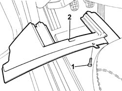
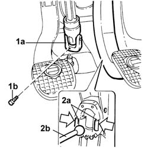
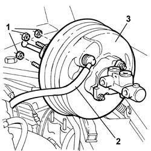

3330D10 BRAKE SERVO - R.R.
- Path
- Procedures > 33 BRAKES > 3330 HYDRAULIC BRAKING SYSTEM > 3330D BRAKE VACUUM SYSTEM > 3330D10 BRAKE SERVO - R.R.
- Kind
- repair procedure (removal / refitting; the operation number is the code)
- Applies to
- all engines; all production periods
- Interactive page
- https://sloeber94.github.io/elrnDB-lThss/en/#/156201
Applies to: all engines; all production periods
 Removing
Removing
 Refitting
Refitting- Disconnect the negative battery terminal.
1. Undo the bolts fixing the trim under the dashboard, driver's side.
2. Remove the trim under the dashboard, driver's side.

Applies to: all engines; all production periods
1. Release the steering column universal joint (1a) undoing the bolt (1b) fixing it to the steering box.
2. Working on the brake pedal, release the clips (2a) fastening the brake servo push rod (2b), then release it from the brake pedal.

Applies to: all engines; all production periods
- Position the vehicle on a lift.
Applies to: engines: 2.4 JTD 10V; all production periods
See in Op. 1016A10 SOUND-PROOFING COVER - R.R.
See in Op. 7040D50 ENGINE COMPARTMENT UPPER SOUND INSULATION SHIELD - R.R.
Applies to: engines: 2.4 20V; all production periods
See in Op. 1016A40 Ignition COIL COVER on cylinder head - R.R.
See in Op. 7040D50 ENGINE COMPARTMENT UPPER SOUND INSULATION SHIELD - R.R.
Applies to: engines: 2.0 TB; all production periods
See in Op. 1016A40 Ignition COIL COVER on cylinder head - R.R.
See in Op. 7040D50 ENGINE COMPARTMENT UPPER SOUND INSULATION SHIELD - R.R.
Applies to: engines: 3.0 V6, 3.2 V6; all production periods
See in Op. 1016A40 Ignition COIL COVER on cylinder head - R.R.
See in Op. 7040D50 ENGINE COMPARTMENT UPPER SOUND INSULATION SHIELD - R.R.
Applies to: engines: 2.4 JTD 20V; all production periods
See in Op. 1016A10 SOUND-PROOFING COVER - R.R.
See in Op. 7040D50 ENGINE COMPARTMENT UPPER SOUND INSULATION SHIELD - R.R.
See in Op. 1048B44 RIGID air supply PIPE from heat exchanger to intake manifold - R.R.
Applies to: all engines; all production periods
See in Op. 3330C40 brake fluid reservoir plug - r + r
See in Op. 3330C30 brake fluid reservoir - r + r and wash inside
See in Op. 3340A12 A.B.S. hydraulic and electronic CONTROL UNIT - R.R. - Includes bleeding air
1. Working from inside the vehicle, undo the nuts fixing the pedal assembly to the brake servo
2. Working from the engine compartment, disconnect the vacuum intake pipe from the single-acting valve connector on the brake servo.
3. Remove the brake servo/brake pump assembly from the engine compartment.

Applies to: all engines; all production periods
- If necessary, separate the rigid pipes connected to the ABS hydraulic and electronic control units and the brke pump from the brake servo at the bench.
Applies to: all engines; all production periods
Refitting
Removing- If they have been removed at the bench, fit the rigid pipes connected to the ABS hydraulic and electronic control units and the brake pump.
- Position the brake servo/brake pump assembly in the housing in the engine compartment.
- Tighten the nuts fixing the brake servo to the pedal asssembly to torque.
 | Value - daNm | Fastening | Component | Ø |
|---|---|---|---|---|
. | 1.4 | Nut | BRAKE SERVO | M8 |
- Connect the vacuum intake pipe on the connector for the single-acting valve on the brake servo.
See in Op. 3340A12 A.B.S. hydraulic and electronic CONTROL UNIT - R.R. - Includes bleeding air
See in Op. 3330C30 brake fluid reservoir - r + r and wash inside
Applies to: engines: 2.4 JTD 10V; all production periods
See in Op. 1016A10 SOUND-PROOFING COVER - R.R.
See in Op. 7040D50 ENGINE COMPARTMENT UPPER SOUND INSULATION SHIELD - R.R.
Applies to: engines: 2.4 20V; all production periods
See in Op. 1016A40 Ignition COIL COVER on cylinder head - R.R.
See in Op. 7040D50 ENGINE COMPARTMENT UPPER SOUND INSULATION SHIELD - R.R.
Applies to: engines: 2.0 TB; all production periods
See in Op. 1016A40 Ignition COIL COVER on cylinder head - R.R.
See in Op. 7040D50 ENGINE COMPARTMENT UPPER SOUND INSULATION SHIELD - R.R.
Applies to: engines: 3.0 V6, 3.2 V6; all production periods
See in Op. 1016A40 Ignition COIL COVER on cylinder head - R.R.
See in Op. 7040D50 ENGINE COMPARTMENT UPPER SOUND INSULATION SHIELD - R.R.
Applies to: engines: 2.4 JTD 20V; all production periods
See in Op. 1048B44 RIGID air supply PIPE from heat exchanger to intake manifold - R.R.
See in Op. 7040D50 ENGINE COMPARTMENT UPPER SOUND INSULATION SHIELD - R.R.
Applies to: all engines; all production periods
- Fit the brake servo push rod in the special housing on the pedal.
- Reposition the steering column universal joint securing it by tightening the fixing bolt to the recommended torque.
| Value - daNm | Fastening | Component | Ø |
|---|---|---|---|---|
. | 2 | Bolt | STEERING SHAFT MOUNTING | M8 |
- Fit the trim under the dashboard, driver's side, in the special housing and secure it using the bolts.
- [0010T64]
- [0010T65]
- Connect the negative battery terminal.
See in Op. 7055B54 PROTECTION/GUARD under engine - R.R.
- Remove the vehicle from the lift.
Topics linked from this page (8)
- 1016A10 SOUND-PROOFING COVER - R.R.
- 1016A40 Ignition COIL COVER on cylinder head - R.R.
- 1048B44 RIGID air supply PIPE from heat exchanger to intake manifold - R.R.
- 3330C30 brake fluid reservoir - r + r and wash inside
- 3330C40 brake fluid reservoir plug - r + r
- 3340A12 A.B.S. hydraulic and electronic CONTROL UNIT - R.R. - Includes bleeding air
- 7040D50 ENGINE COMPARTMENT UPPER SOUND INSULATION SHIELD - R.R.
- 7055B54 PROTECTION/GUARD under engine - R.R.